Magento ExactTarget Email Customization
Details for configuring and customizing emails for the PrecisionDialogue ExactTarget Magento module
Welcome the user documentation for customizing email templates in the Magento ExactTarget Integration module.
These pages will detail the steps required to customize email content for transactional emails initiated in Magento and sent via ExactTarget. Due to the structure of the solution there are multiple "templates" and thus there are multiple locations where templates can be modified, depending on the particular modification requirements.
Table Of Contents
- System Overview
- Magento Configuration
- ExactTarget Configuration
- Walkthrough
System Overview
The Magento ExactTarget integration enables the fulfilment of transactional emails by ExactTarget triggered by events in Magento. Because there are multiple components involved in the fulfilment process there are two places where different templates can be modified to change both the appearance and functionality of the emails.
The email fulfilment process consists of two portions, the first is the initiation of an email send in the Magento system. This functionality uses the existing Magento email templating functionality and is required.
An email send event is triggered in Magento where the Precision Dialogue ExactTarget extension checks to see if the email is configured to be fulfilled by ExactTarget. Emails initiated in Magento are not automatically configured to be sent with ExactTarget, they must be explicitly configured to be sent from the Magento ExactTarget -> Configuration -> Email screen (see Magento Configuration for configuration details). Regardless of configuration, Magento rendering logic is always invoked to render the email template to it's final HTML representation.
If the email is not configured to be sent via ExactTarget, the subject and rendered HTML content are passed back to Magento Core for sending via the configured system mail sending option.
If the email is configured to be sent via ExactTarget, then the subject and rendered HTML content are sent to ExactTarget for insertion into an existing email definition. The subject text is used as the subject of the email and the HTML is inserted into the location where the content personalization string (magento_email_content) is located. See the ExactTarget Configuration for details.
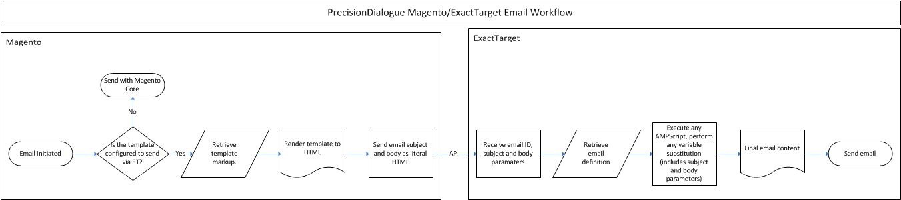
Magento Configuration
Magento configuration starts with the editing of the Magento email template that will be used as the base of the email. If changes to the template are required you can either edit the base template file for the email that is stored on the Magento file system, or you can create a new custom email template from the System -> Transactional Emails screen.
In this walkthrough we are creating a customized email template based on the New Account email for a specific store.
First, we create the new transactional email template from the New Account template, give the template a unique name, and edit the subject and content. Any Magento specific template variables must be contained in this email template, as it is the only one that is processed with Magento.
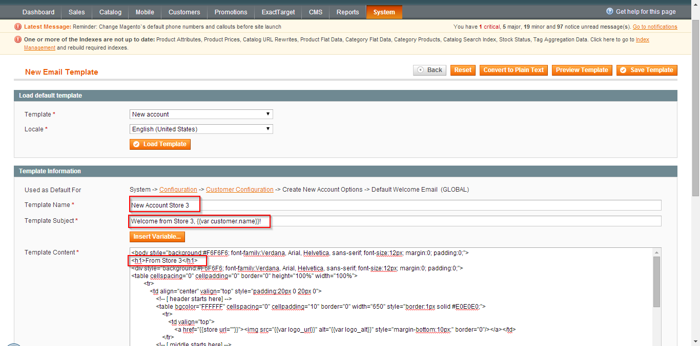
Next, we configure the ExactTarget extension to use ExactTarget as the email sender for our store's New Account email. In Magento we navigate to the ExactTarget -> Configuration -> Email screen and add a new email configuration for our store/email configuration.
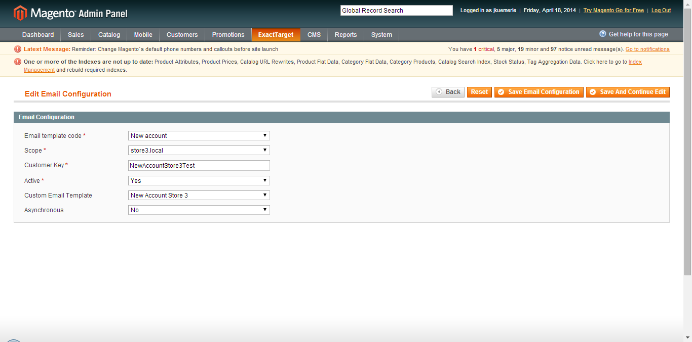
In the configuration we set the Email template code to the correct value of the base email template we want to be sent through ExactTarget. For our example we are going to select the New account template.
Since this is going to be a store specific email we next set the Scope setting to our specific store level scope. To use the same email template for all sites or stores we would set the Scope value to the relevant scope.
Next, we give our email configuration a unique CustomerKey value. This needs to be unique within the configured ExactTarget account (or within the configured ExactTarget Business Unit if using an ExactTarget Enterprise 2.0 account). The Customer Key value is used to manage the ExactTarget side of the email interaction, see the ExactTarget Configuration section for more details.
If we are not going to use the default template we then need to set the Custom Email Template setting to the specific custom template we want to use. In our case, since we are configuring for a specific store, we will set the value to the custom transactional email template we created above (New Account Store 3).
Finally, we set the Asynchronous value. This will determine if the ExactTarget API calls to send the configured email are executed immediately during the email sending process or if they will be placed into a queue for later execution.
With this we have now completed all that is necessary for the basic use case of configuring Magento to send emails via ExactTarget. We have also reviewed the process for customizing the templating from the Magento side.
Remember that there are two places where email template customizations can be made: Magento and ExactTarget.
Any Magento specific template variables must be in the Magento hosted template for them to be properly processed during an email send.
Any ExactTarget specific personalization strings or AMPScript declared in the Magento template will not be evaluated or executed as they will be passed as string literals in the HTML body. See the ExactTarget Configuration section for details on ExactTarget specific options.
ExactTarget Configuration
To support the sending of transactional emails using ExactTarget the Precision Dialogue ExactTarget Magento integration creates and uses a number of triggered send email objects within ExactTarget. When a Magento transactional email is configured to be sent with ExactTarget the extension will either create or reuse (depending on the customer key setting) an email definition, a transactional data extension and a triggered send interaction definition.
The triggered send interaction will be configured to send the specific email definition and to use the transactional data extension for storing data. For the email subject it will use the magento_email_subject personalization string value that is passed from Magento in the API call. This will contain the value of the email template subject as populated by Magento during the email send event.
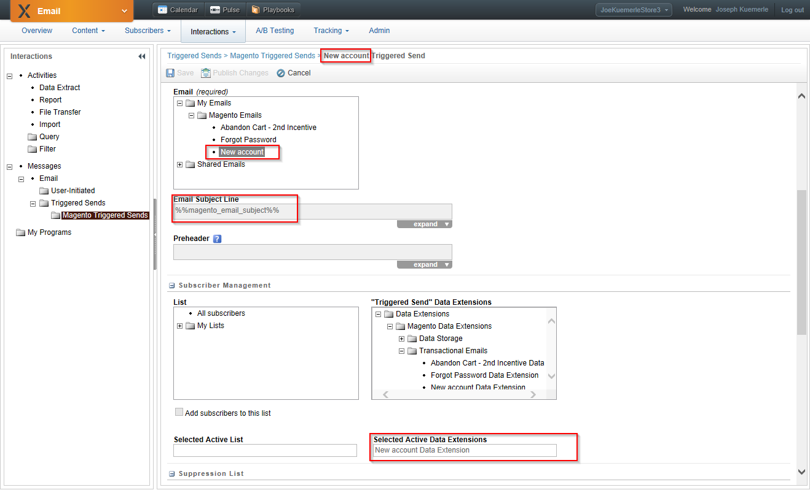
The transactional data extension is keyed to the configured customer key and stores the details of the sent emails, including the recipient email address, the optional subscriber key (populated with the value of the email address), the value of the subject (magento_email_subject) and the entire HTML text of the email body (magento_email_content as rendered by Magento.
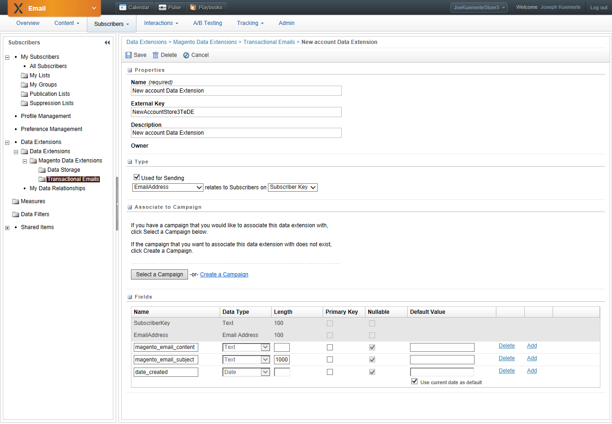
When the email definition is created, the subject is set to be the magento_email_subject value passed from Magento and the entire body is the magento_email_content value that is the HTML text of the email template as rendered by Magento.
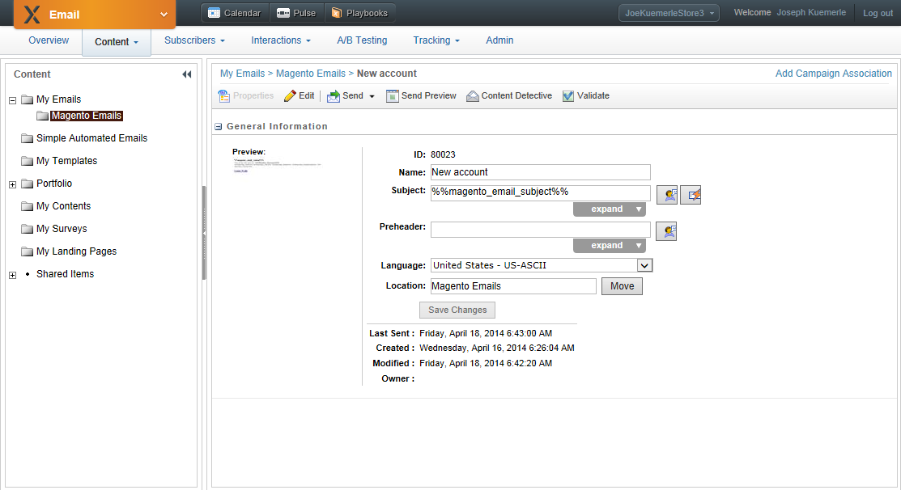
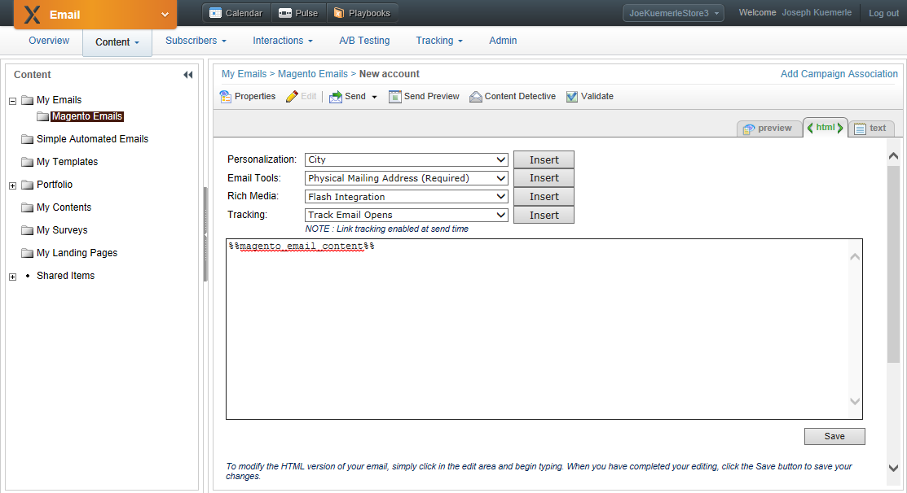
Customizing With ExactTarget specific functionality
The email can be further customized with ExactTarget specific functionality such as additional personalization strings, profile center text, CAN-SPAM mailing address text, AMPScript (including using content areas for easier boilerplate templating) and additional text by editing the email defintion after the Magento extension creates the initial object.
To ensure that we edit the correct ExactTarget email definition we ensure that we edit the email definition that is configured in the New Account triggered send defintion. In our example we will edit the New Account email in our Store 3 ExactTarget Business Unit and add text to display the sender address details (as required by CAN-SPAM), a link to our ExactTarget preference center and some AMPScript to display a unique value within the email.
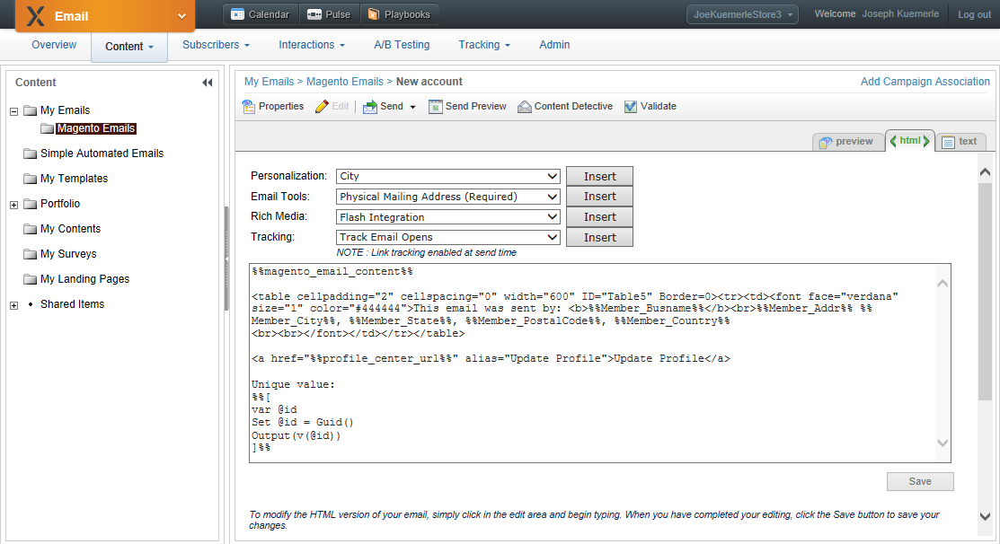
Once we finish editing the ExactTarget email definition we need to ensure that the updated template will be used by ExactTarget. To do this we navigate to the appropriate Triggered Send Interaction (usually under the Magento Triggered Sends folder, select the triggered send interaction(s) that use that email definition and click Publish Changes. This will update the cached email definition that is used by the triggered send interaction and ensure that our modifications are used for all future sends of that email.
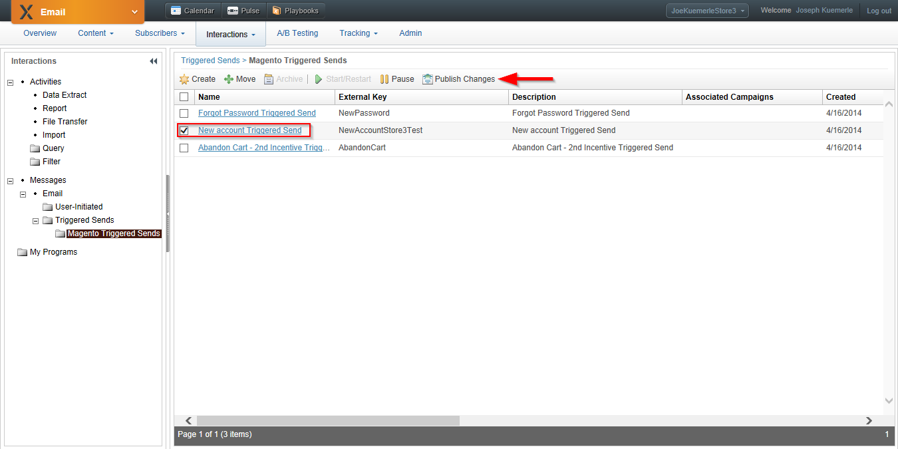
Remember that any Magento specific template variables must be defined in the Magento template, placing them in the ExactTarget email definition will result in the variable defintions being rendered as string literals in the body of the email.
Walkthrough
Now that all of our configuration is complete and we have customized both our Magento transactional email template and the ExactTarget email definition, we will walk through the experience of creating a new account and validating that all the correct templating functionality is executing.
First, we navigate to our Magento store and create a new account.
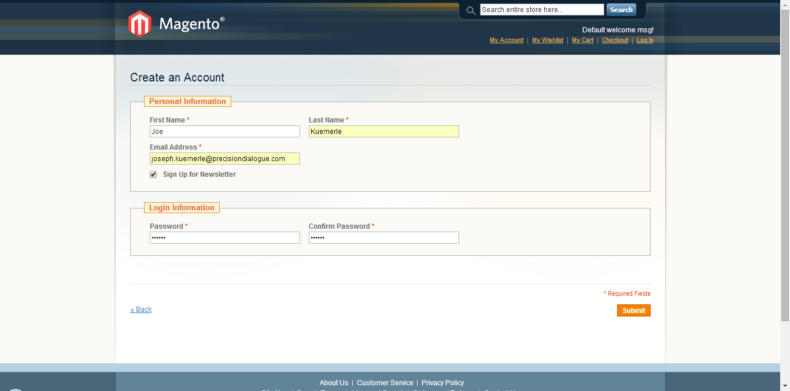
We submit the request for a new account. Magento creates the account and since this store has a ExactTarget email configuration for the New Account email, Magento first renders the template as HTML then sends the subject and body to ExactTarget. Next, ExactTarget receives the content from Magento, renders it in the magento_email_content placeholder, adds the email sender and preference center text that is in the email definition and sends the final email to the subscriber.
The final result is an email that contains templated text from Magento (highligted in red) and templated text from ExactTarget (highlighted in green).
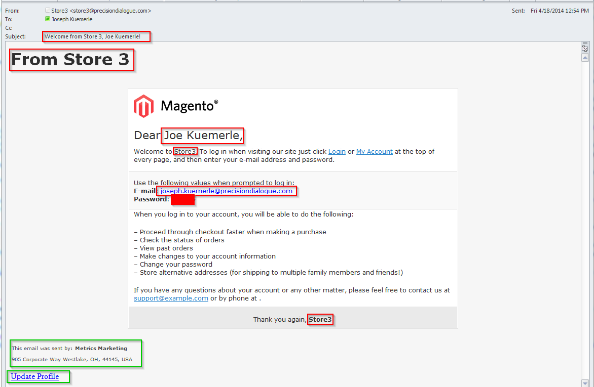
{kind=link}
{kind=link}
{kind=link}
{kind=link}
{kind=link}
{kind=link}
{kind=link}
{kind=link}
{kind=link}
{kind=link}
{kind=link}